Lavish review · Villa Memorial · family portal
Understood at a glance
Every screen now answers three questions in about three seconds: what is happening, what to do next, and how to reach a person. The current design (the one live on main today) is shown beside the new one, screen by screen, with the exact copy a builder can follow. No production file was changed — this is the design for your confirmation.
The problem, in one picture
You said it exactly: “the UI/UX is not user-friendly, customer will have a hard time understanding what is happening… it should be understandable at a glance.” Here is a live Home screen from today beside the new one.
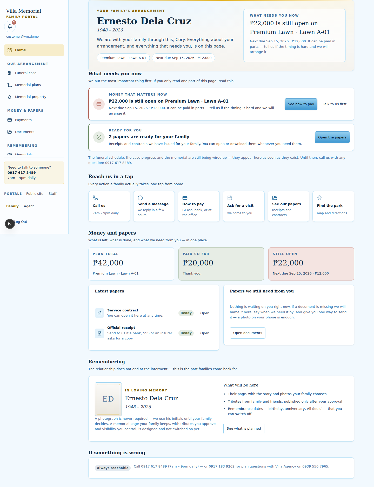
1 2 3- 1 · Fourteen links in a rail of small text — a menu, not an answer.
- 2 · The answer is a card inside a feed of similar cards; the family must read three of them to know where they stand.
- 3 · Eight blocks and 13–15px notes down one page; the important sentence and the small print compete at the same weight.
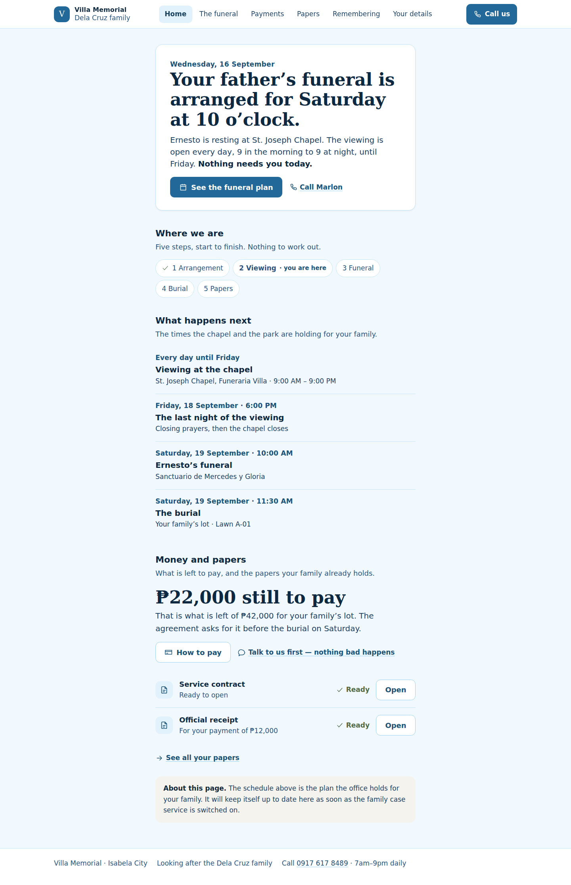
1 2- 1 · One sentence in 30–44px type states the situation; 2 · one button says what to do. Nothing else competes for the first look.
- The name, the schedule, the money and the papers are all still here — one scroll down, in the order a family asks for them.
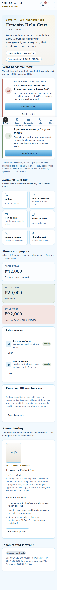
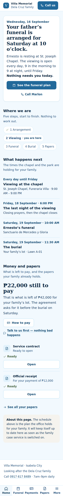
The five rules every screen follows
1
One answer per screen
A large sentence states the situation. One button says what to do next. Everything else sits below it and looks visibly quieter.
2
Plain words, numbers with meaning
“The funeral”, not “Funeral case”. “₱22,000 still to pay before the burial on Saturday”, never a bare figure. If a word like interment is unavoidable, it is explained in the same breath.
3
Big and calm
18px body type, 30–44px headlines, 52px buttons, one card style, no alarm colours for routine news, no motion needed to understand anything.
4
One column, no rails
A single 44rem reading column, readable top to bottom in one scroll. Six plain navigation names with the current one marked; five tabs on the phone.
5
A person, one tap away
“Call us” sits in the top bar on every screen; the coordinator’s name and hours are repeated in the answer of most screens. The family never has to hunt for a human.
The frame: one bar, six names, one Call button
The left sidebar of fourteen links becomes one line of plain names. On a phone the same navigation becomes five tabs with the current place marked — and everything else lives in one simple list, not a maze.
Before → after, on the screens you named
The live phone screens are on the left; the new design is on the right. These are real renders at 390 px, not mock-ups.
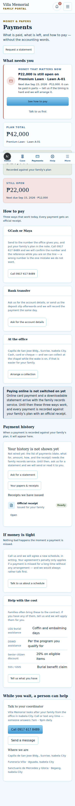
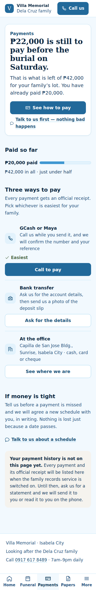
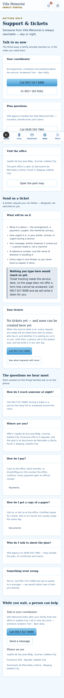
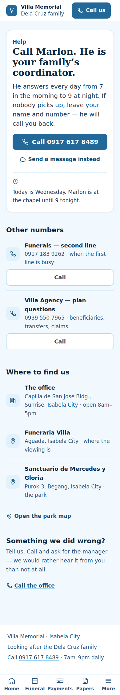
The phone screens in the tab below scroll live — tap inside a frame and scroll to walk the whole page.
The screens, one tab each
Each tab carries the desktop render, a live 390 px page you can scroll, and the exact spec a builder follows: the headline, the supporting line, the primary action, what comes after, and the states.
Screen 01 · /client/dashboard
Home
The one fact
The funeral is Saturday at 10am, and nothing is needed from you today.
The one action
See the funeral plan.
| The one fact in 3 seconds | The funeral is Saturday at 10am, and nothing is needed from you today. |
|---|---|
| The one action in 3 seconds | See the funeral plan. |
| The headline (exact copy) | “Your father’s funeral is arranged for Saturday at 10 o’clock.” |
| The supporting line | Ernesto is resting at St. Joseph Chapel. The viewing is open every day, 9 in the morning to 9 at night, until Friday. Nothing needs you today. |
| The primary action | See the funeral plan (big blue button) |
| Then, in order | Call Marlon (quiet link) · then: the five-step chain · what happens next · money and papers · one honest note. |
| States designed | nothing needs you today (page 09) · no schedule yet (the note under the chain) · error reading the family record (a calm line + the phone number). |
| Built-ness today | Partly real today — the name, plan and papers come from the family snapshot; the schedule is the example. |
Screen 02 · /client/cases
The funeral (today: “Funeral case”)
The one fact
Ernesto is at the chapel now, you can visit every day, and the funeral is Saturday at 10am.
The one action
Get directions to the chapel.
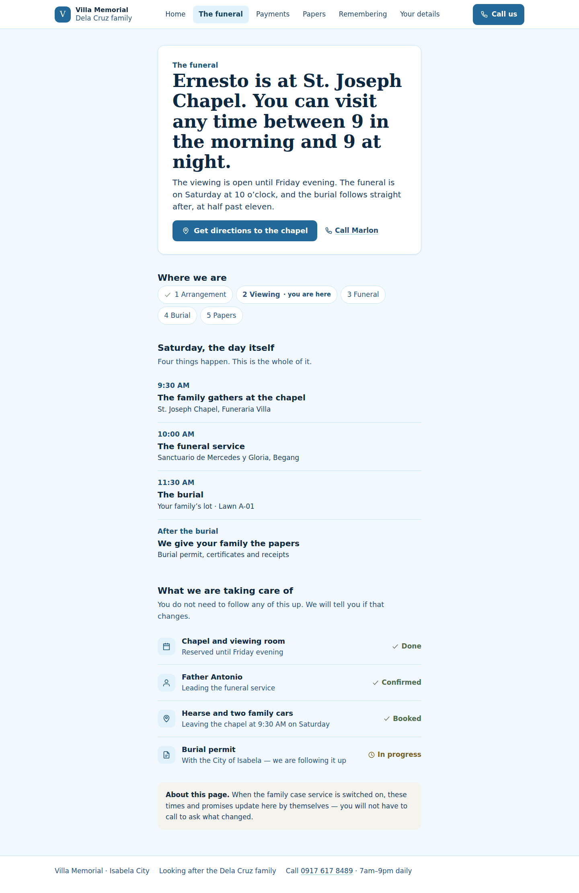
| The one fact in 3 seconds | Ernesto is at the chapel now, you can visit every day, and the funeral is Saturday at 10am. |
|---|---|
| The one action in 3 seconds | Get directions to the chapel. |
| The headline (exact copy) | “Ernesto is at St. Joseph Chapel. You can visit any time between 9 in the morning and 9 at night.” |
| The supporting line | The viewing is open until Friday evening. The funeral is on Saturday at 10 o’clock, and the burial follows straight after, at half past eleven. |
| The primary action | Get directions to the chapel |
| Then, in order | The chain with “you are here” · Saturday hour by hour · what we are taking care of (with the office doing the following-up). |
| States designed | before the wake starts · after the burial · schedule changed by the office (one line at the top) · not wired yet. |
| Built-ness today | Waits on the family case service — the shape is designed; the times are the example we would show. |
Screen 03 · /client/payments
Payments
The one fact
₱22,000 is still to pay before the burial on Saturday.
The one action
See how to pay.
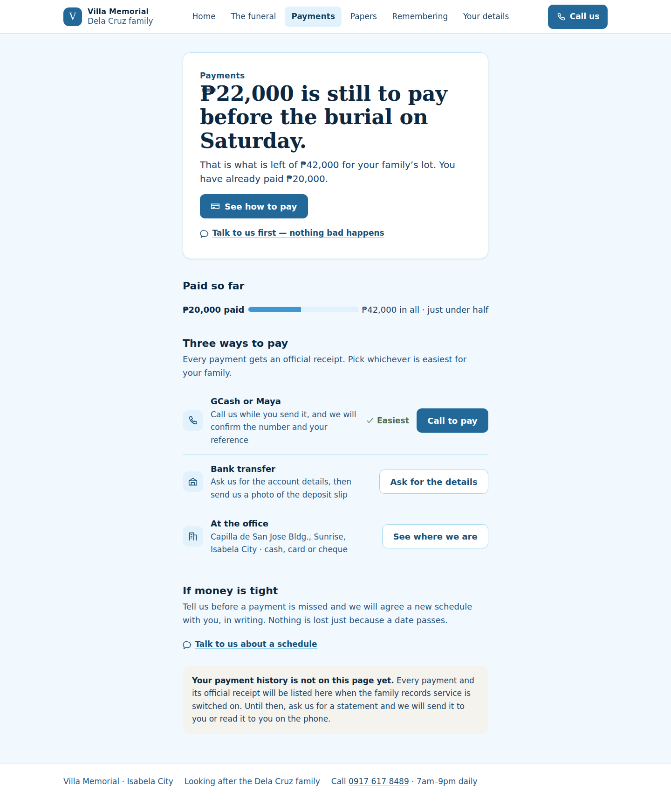
| The one fact in 3 seconds | ₱22,000 is still to pay before the burial on Saturday. |
|---|---|
| The one action in 3 seconds | See how to pay. |
| The headline (exact copy) | “₱22,000 is still to pay before the burial on Saturday.” |
| The supporting line | That is what is left of ₱42,000 for your family’s lot. You have already paid ₱20,000. |
| The primary action | See how to pay |
| Then, in order | Paid-so-far bar in words · three ways to pay (GCash, bank, office) · “if money is tight, call us first” · history as an honest note. |
| States designed | up to date · no balance · past a payment (“let’s find a way”) · history not wired yet. |
| Built-ness today | Partly real today — the figures are the family snapshot; the three ways to pay are real office practice. |
Screen 04 · /client/documents
Papers (today: “Documents”)
The one fact
Everything is ready and nothing is missing.
The one action
Open your papers.
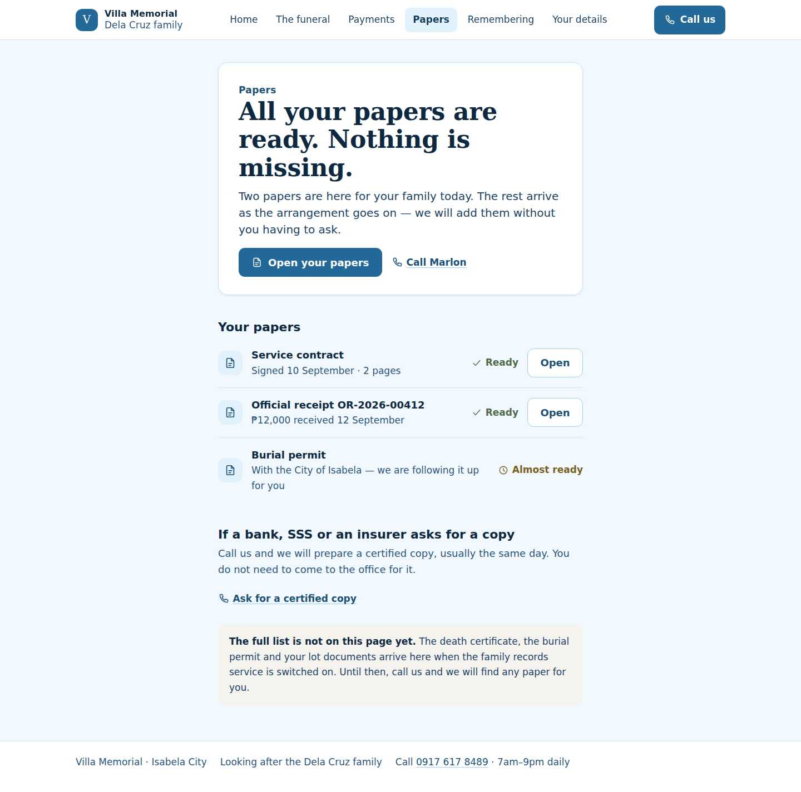
| The one fact in 3 seconds | Everything is ready and nothing is missing. |
|---|---|
| The one action in 3 seconds | Open your papers. |
| The headline (exact copy) | “All your papers are ready. Nothing is missing.” |
| The supporting line | Two papers are here for your family today. The rest arrive as the arrangement goes on — we will add them without you having to ask. |
| The primary action | Open your papers |
| Then, in order | One row per paper: plain name, what it is, one word of state, one Open button · “ask for a certified copy” · honest note for the full repository. |
| States designed | waiting on you (page 10) · nothing yet for a new family · a photo that could not be read (“we could not read this copy — nothing is wrong”). |
| Built-ness today | Partly real today — the two papers are the snapshot; the repository waits on the family records service. |
Screen 05 · /client/memorials
Remembering (today: “Memorials”)
The one fact
Ernesto’s memorial page is ready and two messages wait for the family’s yes.
The one action
Read the two messages.
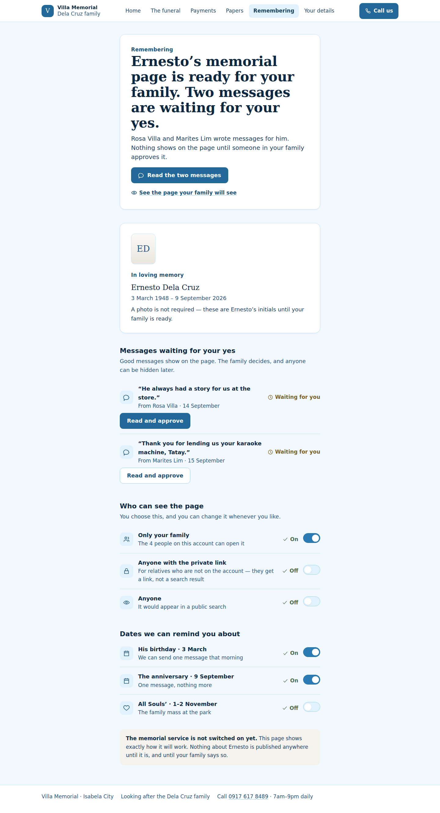
| The one fact in 3 seconds | Ernesto’s memorial page is ready and two messages wait for the family’s yes. |
|---|---|
| The one action in 3 seconds | Read the two messages. |
| The headline (exact copy) | “Ernesto’s memorial page is ready for your family. Two messages are waiting for your yes.” |
| The supporting line | Rosa Villa and Marites Lim wrote messages for him. Nothing shows on the page until someone in your family approves it. |
| The primary action | Read the two messages |
| Then, in order | The monogram portrait (a photo is never required) · who can see the page (three plain choices) · the dates you can be reminded about. |
| States designed | draft · no messages yet · years later (it stays for as long as you keep it) · unkind message (hide in one tap) · not switched on. |
| Built-ness today | Designed, not wired — the memorial service does not exist yet; the page says so instead of pretending. |
Screen 06 · /client/support
Help (today: “Support & tickets”)
The one fact
Marlon answers every day, 7am to 9pm — call him.
The one action
Call 0917 617 8489.
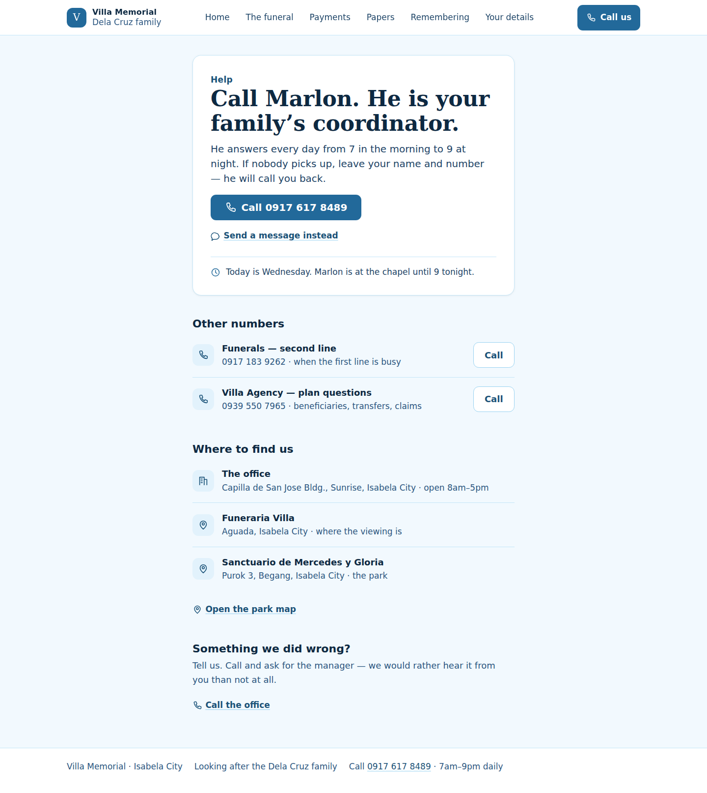
| The one fact in 3 seconds | Marlon answers every day, 7am to 9pm — call him. |
|---|---|
| The one action in 3 seconds | Call 0917 617 8489. |
| The headline (exact copy) | “Call Marlon. He is your family’s coordinator.” |
| The supporting line | He answers every day from 7 in the morning to 9 at night. If nobody picks up, leave your name and number — he will call you back. |
| The primary action | Call 0917 617 8489 (the biggest button in the portal) |
| Then, in order | The second line and Villa Agency · where to find the office and the park · “something we did wrong? call and ask for the manager”. |
| States designed | during a service (the duty line) · after hours (leave a number) · a complaint (routed to a manager). |
| Built-ness today | Real today — the client’s own numbers and places. Tickets are designed and not offered as a form that cannot be answered. |
Screen 07 · /client/profile
Your details (today: “My profile”)
The one fact
The details we hold are correct, and you can make the writing bigger.
The one action
Make the writing bigger.
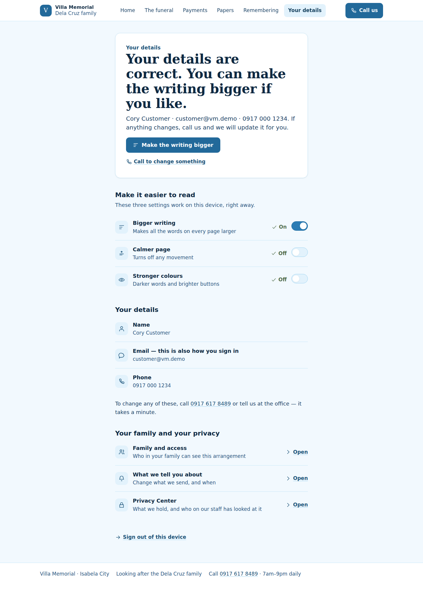
| The one fact in 3 seconds | The details we hold are correct, and you can make the writing bigger. |
|---|---|
| The one action in 3 seconds | Make the writing bigger. |
| The headline (exact copy) | “Your details are correct. You can make the writing bigger if you like.” |
| The supporting line | Cory Customer · customer@vm.demo · 0917 000 1234. If anything changes, call us and we will update it for you. |
| The primary action | Make the writing bigger (works on the device today) |
| Then, in order | Three reading switches · the details themselves · family, notifications and privacy as plain rows · sign out. |
| States designed | email change pending · no mobile on file · a staff edit conflicts with yours (never silently overwrite). |
| Built-ness today | Partly real today — the reading preferences really work; editing details needs the family records service. |
Screen 08 · /client/login
Sign in
The one fact
This is the family’s private place, and signing in opens it.
The one action
Sign in.
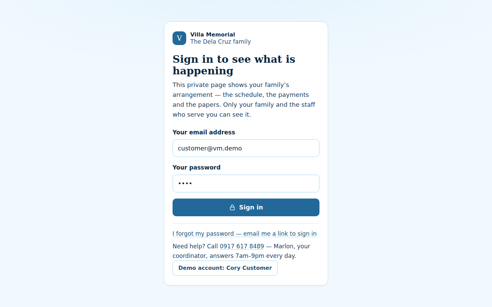
| The one fact in 3 seconds | This is the family’s private place, and signing in opens it. |
|---|---|
| The one action in 3 seconds | Sign in. |
| The headline (exact copy) | “Sign in to see what is happening” |
| The supporting line | This private page shows your family’s arrangement — the schedule, the payments and the papers. Only your family and the staff who serve you can see it. |
| The primary action | Sign in |
| Then, in order | Forgot-password link · the office number · the demo account button for a reviewer. |
| States designed | wrong password (“that password did not match — email me a link”) · expired invitation (call the coordinator) · service down (office number). |
| Built-ness today | Real today — the app’s sign-in, re-skinned to the same big-type rules. |
Screen 09 · /client/dashboard
Home — “Nothing needs you today” (an empty, calm state)
The one fact
Nothing is needed, and the next thing is known.
The one action
See the funeral plan, or open the memorial.
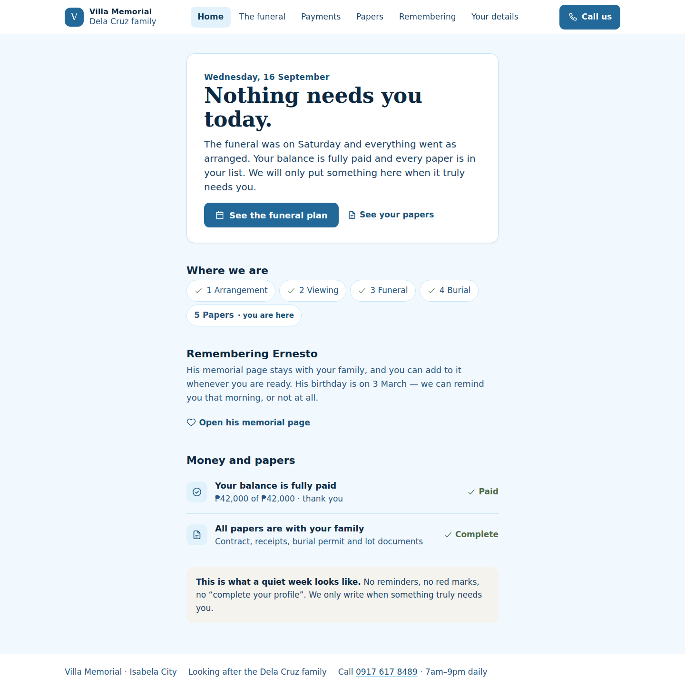
| The one fact in 3 seconds | Nothing is needed, and the next thing is known. |
|---|---|
| The one action in 3 seconds | See the funeral plan, or open the memorial. |
| The headline (exact copy) | “Nothing needs you today.” |
| The supporting line | The funeral was on Saturday and everything went as arranged. Your balance is fully paid and every paper is in your list. We will only put something here when it truly needs you. |
| The primary action | See the funeral plan |
| Then, in order | A fully-checked chain · remembering · a one-line money statement with no red marks. |
| States designed | This is the state itself — the design says so instead of inventing a task. |
| Built-ness today | The state is designed; the quiet-week content waits on the case and memorial services. |
Screen 10 · /client/documents
Papers — two papers waiting on you (long content)
The one fact
Two papers are needed before Friday, and a photo is enough.
The one action
Take a photo of the first paper.
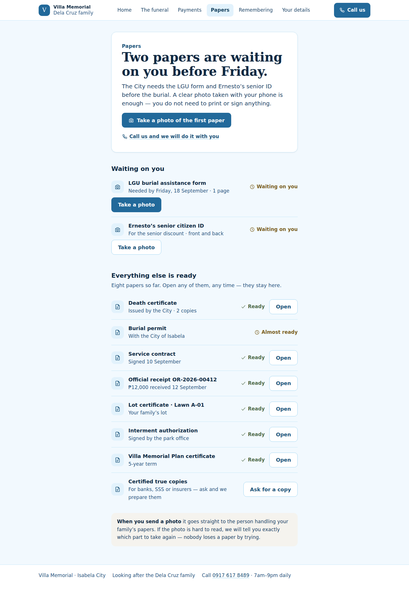
| The one fact in 3 seconds | Two papers are needed before Friday, and a photo is enough. |
|---|---|
| The one action in 3 seconds | Take a photo of the first paper. |
| The headline (exact copy) | “Two papers are waiting on you before Friday.” |
| The supporting line | The City needs the LGU form and Ernesto’s senior ID before the burial. A clear photo taken with your phone is enough — you do not need to print or sign anything. |
| The primary action | Take a photo of the first paper |
| Then, in order | The two waiting rows · the eight ready rows in one simple list (a long page stays readable) · what happens to a photo you send. |
| States designed | nothing missing · a rejected photo · offline (keep the photo, send when back) · the whole list archived after the funeral. |
| Built-ness today | Partly real today — the pattern is built from the document statuses; the upload path waits on object storage. |
Every element of the current design: kept, simplified, moved or dropped
Nothing is left undecided. If you want one of these back as it was, say so on the element itself.
| Today | What happens to it | Why |
|---|---|---|
| Left sidebar with 14 grouped links | Dropped — replaced by a plain top bar with 6 names (Home · The funeral · Payments · Papers · Remembering · Your details) and one Call button. | A grieving reader should not scan 14 staff nouns. Six plain names fit one line; the phone keeps five of them in the bottom bar. |
| Phone bottom bar: Home · Case · Payments · Help · More | Simplified — Home · Funeral · Payments · Papers · More, with Call always in the top bar. | “Case” was jargon; “Funeral” is the word families use. Call sits in the bar beside the brand, so help is one tap from anywhere. |
| Hero: name + life dates + eyebrow + welcome paragraph + two chips + a next-events aside | Simplified — one Answer card: a dated line, the situation sentence, one short supporting line, one button, one quiet link. | The name and dates are still here (in the answer, when the funeral page needs them) but the chips and side panel competed with the one thing that matters. |
| “What needs you now” — up to three cards, two buttons each, coloured left rules | Simplified — one Answer block. At most one more “waiting on you” item appears below it, as a plain row. | One dominant answer per screen: the family reads one sentence and knows where they stand. Severity colours made every routine item look like an alarm. |
| “Reach us in a tap” — six quick-action tiles | Dropped — the actions moved to where they belong: Call in the top bar, directions on the funeral page, payment in the money section, papers under Papers. | A tile grid is a menu, not an answer. The same six actions are now reachable with fewer choices and no decoding. |
| “Where things stand” — five steps with notes, plus a “what we’re doing this week” card | Simplified — a five-word chain with the current step named (“you are here”), and the week’s work folded into the funeral page. | The chain answers “where are we?” in one glance. The notes and the work card buried that answer in detail nobody needs yet. |
| “The next few days” timeline + family-abroad switches | Kept, simplified — a plain “what happens next” list of day · what · where; the overseas time switch moves to Your details. | The schedule is the second-most important fact; it stays, with half the words and no switch panel in the middle of it. |
| “Who is with you” — coordinator card and family list | Moved — the coordinator is named on every screen (“Call Marlon”), the family list lives under Family & access. | The family needs one name and one number, not an org chart. The full list is still there, one level down. |
| “Money and papers” — three money cards + two document cards on Home | Moved, simplified — one money sentence with its meaning (“₱22,000 still to pay before Saturday”), then two paper rows. | Figures without their meaning are the exact thing the captain called out. Every number now carries what it is for. |
| Status badges (colour chips: Ready / Being checked / Waiting on you) | Simplified — a word plus a small icon; state is never colour alone; routine news is never red. | Older readers and colour-blind readers both get the state from the word; the palette stops shouting. |
| Small-print notes (13–15px) across every block | Dropped — 18px body minimum, 15px for navigation labels only, secondary text stays ≥17px and darker. | The family reads on a phone, often at arm’s length, often without reading glasses at hand. |
| “This page is designed but not wired yet” alert boxes | Kept, restyled — one calm note at the bottom of the page, in plain words, with the phone number. | Honesty stays; the alarm treatment goes. A missing backend is not the family’s emergency. |
| Document rows: title · meta · badge · small ghost button | Simplified — one row per paper: plain name, one line about it, one state word, one full-size action. | One decision per row, with a target big enough to tap. |
| Payment progress bar with a percentage note | Kept, made literal — “₱20,000 paid · ₱42,000 in all · just under half”, with the bar beside the words. | The bar supports the sentence; it never replaces it. |
| Reading preferences (bigger text, calmer page, stronger colours) | Kept and promoted — it is now the primary action on Your details. | It is the one control that genuinely works today and directly serves the older reader. |
| Notification bell + demo notices | Moved — into the More list and a single line on Home when something new exists. | A bell with a number invites checking; a line says what happened. The family is not here for engagement. |
| Funeral case stages preview (7 internal stages with notes) | Simplified — the five-step chain, in family words. | Seven internal stages are the office’s model; five family moments are the family’s. |
| “Pages that are designed but not switched on” as a grid of feature blocks | Simplified — one honest sentence + the phone number, plus the sample page when the service arrives. | A wall of “what will be here” reads like a brochure; the family needs one way forward. |
Your calls
Six decisions shape everything else. Pick an answer and press Queue this answer; or select anything in a sample page and annotate it directly. Everything you send reaches me and this page is revised in place.
Drop the left sidebar and use the plain top bar + phone bottom bar?
The rail is the single densest thing on the current screens.
Is the phone bar right: Home · Funeral · Payments · Papers · More (with Call in the top bar)?
Five slots is the maximum a phone takes comfortably.
On Home, is the funeral the right headline fact, with the money demoted below it during the wake?
This is the one call that changes what every family sees first.
The plain names: “The funeral” (not Funeral case), “Papers” (not Documents), “Your details” (not My profile)?
Names are the first thing a reader decodes.
The five-step chain — Arrangement · Viewing · Funeral · Burial · Papers?
The chain is the progress language for every screen.
Approve this direction so it can be built exactly as drawn?
An approved design is the build contract.
How this was checked
Every claim below comes from a real browser render at 1440 × 900 and 390 × 844,
measured — not estimated. The full JSON is beside this artifact at audit-results.json.
| Screen | Headline size d/p | Primary button | Above the fold | Smallest text d/p | Targets < 44px | Contrast failures | Sideways scroll |
|---|---|---|---|---|---|---|---|
| Home | 44px / 30px | 52px | yes | 15px / 15px | 0 | 0 | none |
| The funeral | 44px / 30px | 76px | yes | 15px / 15px | 0 | 0 | none |
| Payments | 44px / 30px | 52px | yes | 16px / 15px | 0 | 0 | none |
| Papers | 44px / 30px | 52px | yes | 16px / 15px | 0 | 0 | none |
| Remembering | 44px / 30px | 76px | yes | 16px / 15px | 0 | 0 | none |
| Help | 44px / 30px | 52px | yes | 16px / 15px | 0 | 0 | none |
| Your details | 44px / 30px | 76px | yes | 16px / 15px | 0 | 0 | none |
| Sign in | 30px / 30px | 52px | yes | 16px / 16px | 0 | 0 | none |
| Nothing needs you | 44px / 30px | 52px | yes | 15px / 15px | 0 | 0 | none |
| Papers waiting | 44px / 30px | 76px | yes | 16px / 15px | 0 | 0 | none |
Every headline, read aloud
These are the sentences a family would say; if one of them sounds like a form letter, that is a defect and I want to know.
- “Your father’s funeral is arranged for Saturday at 10 o’clock.”
- “Ernesto is at St. Joseph Chapel. You can visit any time between 9 in the morning and 9 at night.”
- “₱22,000 is still to pay before the burial on Saturday.”
- “All your papers are ready. Nothing is missing.”
- “Ernesto’s memorial page is ready for your family. Two messages are waiting for your yes.”
- “Call Marlon. He is your family’s coordinator.”
- “Your details are correct. You can make the writing bigger if you like.”
- “Sign in to see what is happening”
- “Nothing needs you today.”
- “Two papers are waiting on you before Friday.”
What is real and what is an example
- Real today: the names, dates, plan and balance from the family snapshot; the client’s phone numbers and addresses; the sign-in; the reading preferences.
- Example in the sample: the funeral times and places, the paper list and the memorial messages — everywhere they appear, the page says the service behind them is not switched on yet, and the built version keeps saying so.
- Never invented: no prices that are not in the client’s own tables, no retention promises, no payment destinations, no memorial visibility that has not been chosen by the family.
How to reproduce every check
cp styles/tokens.css styles/base.css .lavish/family-v2/ python3 .lavish/family-v2/gen/pages.py # writes the 10 sample pages node .lavish/family-v2/gen/audit.mjs # real 1440×900 / 390×844 render audit # screenshots: node .lavish/family-v2/gen/shoot.mjs